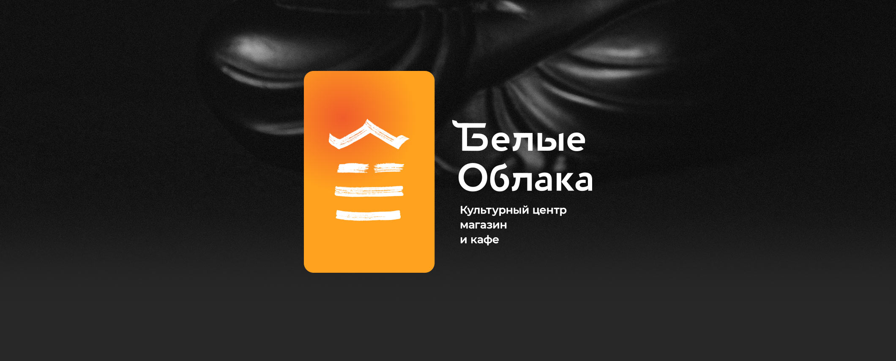
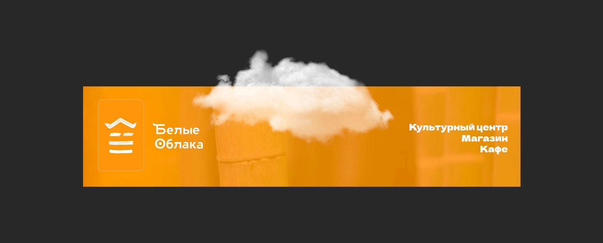
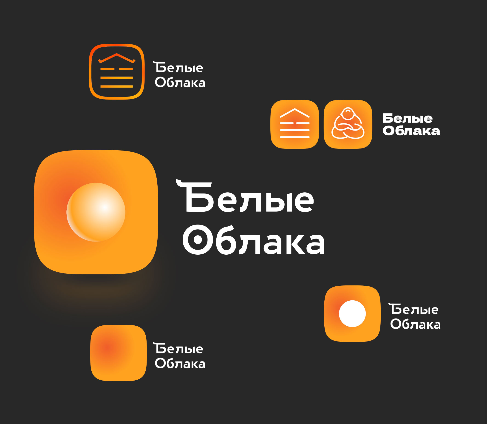

While retaining the familiar color and symbol, the new logo has received a fresh font and a simplified composition


In the process, logos of varying degrees of minimalism were born - the conservative one won.